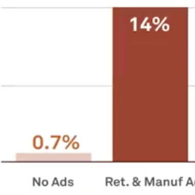
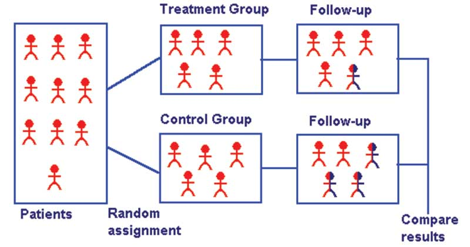
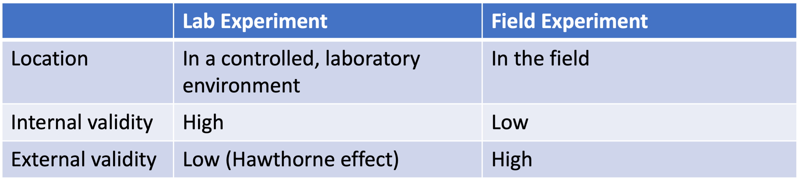

Class 10 Randomized Controlled Trials
1 Gold Standard of Causal Inference
1.1 Revisit of ATE, ATT, and ATU in BMW Case: Targeted Ads
If BMW ads are not randomized to consumers but targeted at interested consumers

- Observed outcomes in data
- \(E[Y^1 | D = 1] = 14\%\)
- \(E[Y^0 | D = 0] = 0.7\%\)
- Counterfactual outcomes in parallel universe
- \(E[Y^0 | D = 1] = 5\%\)
- \(E[Y^1 | D = 0] = 2.7\%\)
- Average outcome for treated - Average outcome for untreated
- = \(E[Y^1| D = 1] - E[Y^0| D = 0]\) = 13.3%
- = \((E[Y^1| D = 1] - E[Y^0 | D = 1]) + (E[Y^0 | D = 1] - E[Y^0| D = 0])\)
- = ATT + Selection Bias
- ATT = \(E[Y^1| D = 1] - E[Y^0| D = 1]\) = 14% - 5% = 9%
- ATU = \(E[Y^1| D = 0] - E[Y^0| D = 0]\) = 2.7% - 0.7% = 2%
- Selection Bias = \(E[Y^0 | D = 1] - E[Y^0 | D = 0]\) = 5% - 0.7% = 4.3%
- ATE = 0.5 * ATT + 0.5 * ATU = 5.5%
1.2 Revisit of ATE, ATT, and ATU in BMW Case: Randomized Ads
If BMW ads are randomized to consumers
- Observed outcomes in data
- \(E[Y^1 | D = 1] = 14\%\)
- \(E[Y^0 | D = 0] = 0.7\%\)
- Counterfactual outcomes in parallel universe
- \(E[Y^0 | D = 1] = 0.7\%\)
- \(E[Y^1 | D = 0] = 14\%\)
- Average outcome for treated - Average outcome for untreated
- = \(E[Y^1| D = 1] - E[Y^0| D = 0]\) = 13.3%
- = \((E[Y^1| D = 1] - E[Y^0 | D = 1]) + (E[Y^0 | D = 1] - E[Y^0| D = 0])\)
- = ATT + Selection Bias
- ATT = \(E[Y^1| D = 1] - E[Y^0| D = 1]\) = 14% - 0.7% = 13.3%
- ATU = \(E[Y^1| D = 0] - E[Y^0| D = 0]\) = 14% - 0.7% = 13.3%
- Selection Bias = \(E[Y^0 | D = 1] - E[Y^0 | D = 0]\) = 0.7% - 0.7% = 0%
- ATE = 0.5 * ATT + 0.5 * ATU = 13.3%
1.3 Revisit of Basic Identity of Causal Inference
After assigning individuals into the treatment group and control group, we also observe the outcome for each individual in both groups.
We can decompose the observed outcome of a treatment into two effects
Average outcome for treated - Average outcome for untreated
= [Average outcome for treated - Average counterfactual outcome for treated] + [Average counterfactual outcome for treated - Avereage outcome for untreated]
= ATT + Selection Bias
1.4 Random Assignment of Individuals
- Basic Identity of Causal Inference shows why randomized controlled trials are the gold standard for causal inference: If the treated group is a random sample of the population,
- the first term is an estimate of the causal impact of the treatment on the population
- the second term has an expected value of zero.
- Then by computing the average difference between the treatment group and control group, we obtain the average treatment effect!
1.5 Randomized Controlled Trials
1.5.1 Randomized Controlled Trials
A randomized controlled trial (RCT) is an experimental form of impact evaluation in which the population receiving the program or policy intervention is chosen at random from the eligible population, and a control group is also chosen at random from the same eligible population.

1.6 Types of RCTs in Marketing: Based on Location

1.7 Types of RCTs in Marketing: Univariate Testing
We only vary the level of a single treatment variable (e.g., loyalty program)
- A/B testing (treatment group + control group)
- Loyalty program
- No loyalty program
- A/B/N testing (multiple treatment groups + control group)
- Point-based loyalty program; points can be redeemd for price vouchers
- Point-based loyalty program; points can be redeemd for gifts
- Point-based loyalty program; points can be redeemd for free top ups
- No loyalty program
1.8 Types of RCTs in Marketing: Multivariate Testing
We are interested in multiple treatment variables and their interaction effects.
- 2-by-2 factorial design
- treatment group 1: LP Yes + Promo Yes
- treatment group 2: LP Yes + Promo No
- treatment group 3: LP No + Promo Yes
- control group: LP No + Promo No
2 Steps to Run a RCT
2.1 Motivating Example
Tom is considering whether or not to introduce a loyalty program for his bubble tea business. This decision is essentially a cost-benefit analysis
Cost: it takes money and time to develop the loyalty program
Benefit: it may increase spending and retention rate, and hence future CLV
Cost can be estimated through budgeting, but how to estimate the benefit from introducing LP?
How you design the experiment is more an art than a science.
2.2 Step 1: Decide on the Unit of Randomization
In the first step, we decide the level of granularity random assignment should occur at.
- individual/household/store/city level
2.3 Step 1: Proposal I
Proposal 1: It decides at random to test ‘No’ in West London and ‘Yes’ in East London.
- Do you expect the “at random” to be true randomization?
2.4 Step 1: Proposal II
Proposal 2: It randomizes each individual customer to either the ‘No’ condition or ‘Yes’ pricing condition.
Is this true randomization?
What problems can we still have?
2.5 Step 1: Pros and Cons of Granularity
Disadvantages of granularity:
Costs and logistics
Spillovers and crossovers
Advantages of granularity:
Reduces the chance that the unobserved factors matter ex ante
Reduces the chance that there might be a systematic error/unbalance of covariates
Additional Questions:
- How can we randomize individualized price discounts to customers?
2.6 Step 2: Ensure No Spillover and Crossover Effects
- Crossover Effects: A crossover occurs when an individual who was supposed to be assigned to one treatment is accidentally exposed to another treatment.
- Solution: Make sure that the same unit receives the same treatment throughout the experiment
- Spillover effects: The behavior of the treatment group can affect control group as well
- Solution: Randomize at the level of plausibly isolated social networks such as a community, rather than individual level.
2.7 Step 2: Ensure No Spillover and Crossover Effects
Proposal: How should Tom mitigate spillover and crossover effects
2.8 Step 3: Decide on Randomization Allocation Scheme
- Complete Randomization: individuals (or the relevant unit of randomization) are simply allocated at random into a treatment.
- Most commonly used; easy to implement; no data required ex ante
- Stratified Randomization: individuals are first divided into subsamples based on certain characteristics, and then randomization is conducted in each subsample
- This stratified technique is useful if a covariate is strongly correlated with an outcome.
- Limitations: reliable data that would allow such stratification may not be present
Proposal: We can use complete randomization as customer purchase history data may not be available.
2.9 Step 4: Collect Data
- Any field experiment should be aware of the potential need for a large sample size
- The larger sample size, the higher statistical power for the experiment
- run a power calculation [link for tutorial] if there is a budget
- Collect both data on the outcome variables of interest and consumer characteristics data
Proposal: We need to collect customers’ retention rate data and link the retention data with their treatment assignment.
2.10 Step 5: Interpreting Results from a Field Experiment
Step 5.1: Randomization check
- We need to check if the treatment group and control group are indifferent and well-balanced in terms of their pre-treatment characteristics.
Step 5.2: Analyze the data and estimate the ATE
- t-test to examine the difference in the average outcome between the treatment group and control group. In R, we can use
t.test() - Regression analysis (next week)